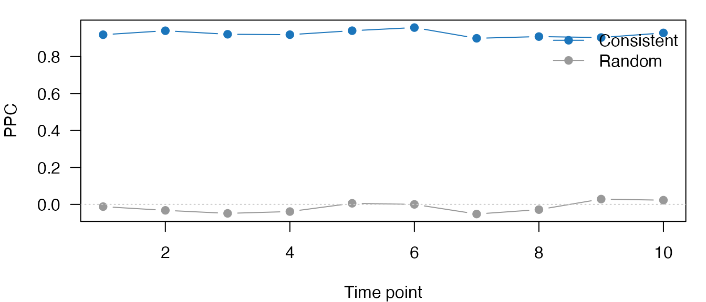
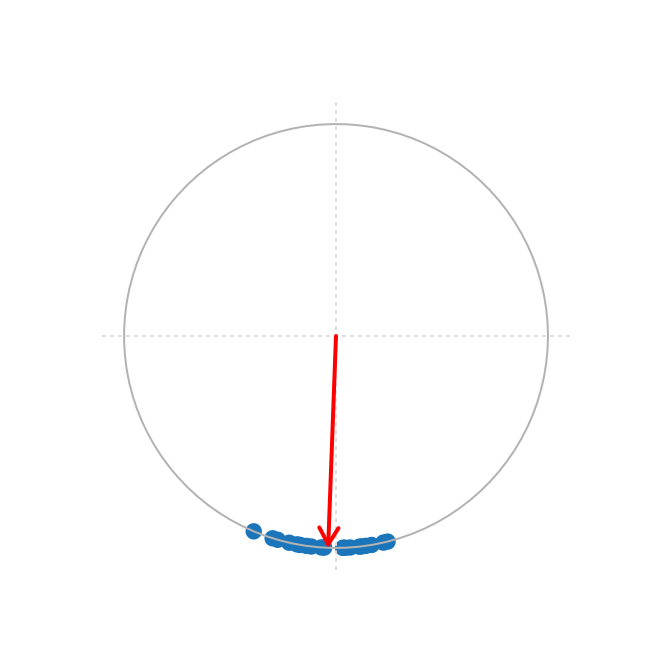
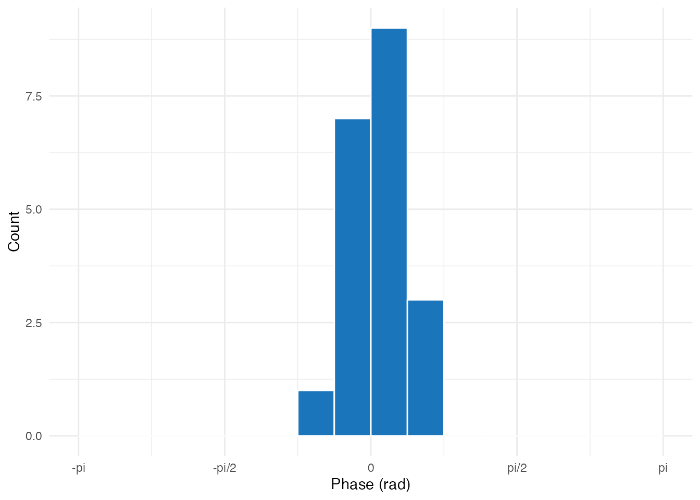
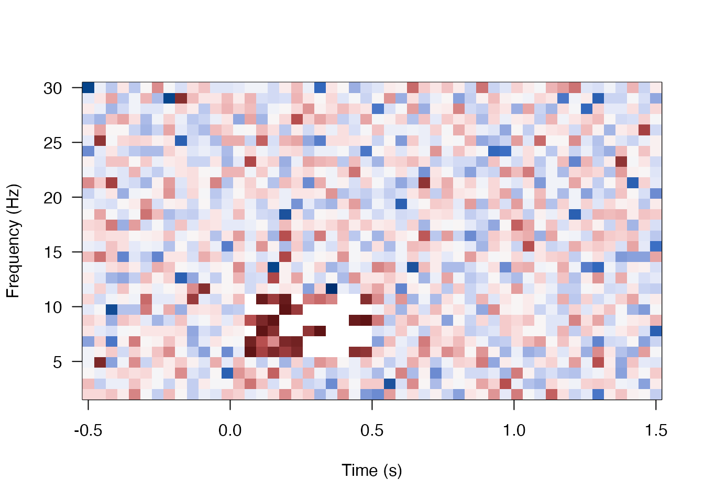
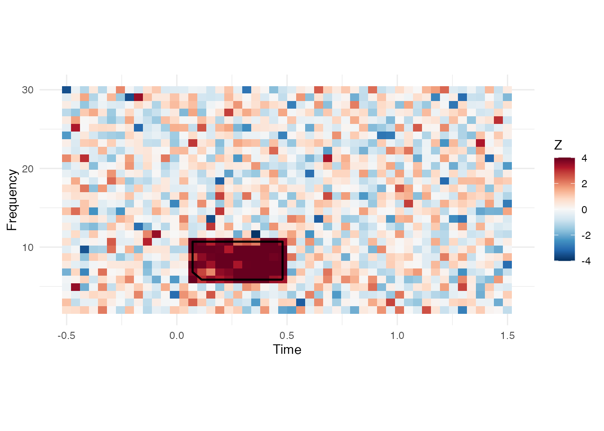

The problem: finding rhythmic structure in noisy data
You’ve collected phase angles from neural recordings across many trials — perhaps from narrowband-filtered EEG time-locked to a behavioral response. Two questions arise:
- Are the phases consistent across trials? If subjects respond at a preferred oscillatory phase, the phase distribution will be non-uniform.
- Where in time-frequency space is the effect? With data at many frequencies and time points, you need cluster-based correction to control for multiple comparisons.
This vignette covers both: Pairwise Phase Consistency (PPC) for bias-free phase-locking measurement, and cluster-based permutation testing for time-frequency maps. PPC avoids the trial-count bias of mean resultant length, making it the preferred metric for comparing conditions with unequal trial numbers.
For oscillation score analysis, see
vignette("oscillation-score").
Pairwise Phase Consistency (PPC)
What is PPC?
PPC measures how consistent phase angles are across trials by computing the average cosine of pairwise phase differences:
- PPC = 1: All phases identical (perfect consistency)
- PPC = 0: Random phases (no consistency)
- PPC < 0: Phases clustered at opposite angles
Basic PPC Computation
set.seed(123)
# Simulate phase data: 20 trials, 10 time points
n_trials <- 20
# Condition 1: Phases clustered around 0 (high consistency)
phases_consistent <- matrix(
rnorm(n_trials * 10, mean = 0, sd = 0.3),
nrow = n_trials
)
# Condition 2: Random phases (low consistency)
phases_random <- matrix(
runif(n_trials * 10, -pi, pi),
nrow = n_trials
)
# Compute PPC along trial dimension (dim = 1)
ppc_consistent <- pairwise_phase_consistency(phases_consistent, dim = 1)
ppc_random <- pairwise_phase_consistency(phases_random, dim = 1)
cat("PPC (consistent phases):", round(mean(ppc_consistent), 3), "\n")
#> PPC (consistent phases): 0.923
cat("PPC (random phases):", round(mean(ppc_random), 3), "\n")
#> PPC (random phases): -0.015
PPC values across time points: consistent phases (blue) vs random phases (grey).
Phase Extraction with Narrowband Hilbert
In real analyses, phases come from narrowband-filtered neural signals:
set.seed(456)
fs <- 500 # 500 Hz sampling
# Simulate 20 trials of oscillatory data with phase-locked response
n_trials <- 20
trial_length <- fs # 1 second per trial
# Generate trials with consistent phase at response time
phases_at_response <- numeric(n_trials)
for (i in seq_len(n_trials)) {
# Simulated neural signal: 10 Hz oscillation + noise
t <- seq(0, 1, length.out = trial_length)
neural <- sin(2 * pi * 10 * t + runif(1, -0.3, 0.3)) + rnorm(trial_length, sd = 0.5)
# Extract alpha phase using narrowband Hilbert
nb <- narrowband_hilbert(data = neural, fs = fs, freqlim = c(8, 12))
# Get phase at "response time" (sample 250 = 500 ms)
phases_at_response[i] <- Arg(nb$analytic[250])
}
# Compute circular statistics
cat("Mean phase:", round(circ_mean(phases_at_response), 3), "rad\n")
#> Mean phase: -1.608 rad
cat("Resultant length:", round(circ_r(phases_at_response), 3), "\n")
#> Resultant length: 0.984
# Rayleigh test
ray <- circ_rayleigh(phases_at_response)
cat("Rayleigh p-value:", format(ray$pval, digits = 3), "\n")
#> Rayleigh p-value: 1.33e-08
Phase angles at response time across 20 trials. Clustering near 0 indicates phase-locking.
Circular Statistics Functions
# Using the phases from consistent condition
angles <- phases_consistent[, 1]
# Circular mean direction
mu <- circ_mean(angles)
cat("Mean direction:", round(mu, 3), "rad\n")
#> Mean direction: 0.043 rad
# Mean resultant length (concentration)
r <- circ_r(angles)
cat("Resultant length:", round(r, 3), "\n")
#> Resultant length: 0.96
# Rayleigh test for non-uniformity
rayleigh <- circ_rayleigh(angles)
cat("Rayleigh p-value:", format(rayleigh$pval, digits = 3), "\n")
#> Rayleigh p-value: 2.44e-08
# V-test against expected direction of 0
vtest <- circ_vtest(angles, dir = 0)
cat("V-test p-value:", format(vtest$pval, digits = 3), "\n")
#> V-test p-value: 6.48e-10Visualizing Phase Distribution
plot_phase_hist(angles, nbins = 16)
Phase distribution showing clustering around 0
How do you find significant clusters in time-frequency maps?
Cluster-based permutation testing is the standard approach for multiple comparison correction in time-frequency analyses. It works by:
- Thresholding the statistical map to identify contiguous clusters
- Computing a cluster statistic (sum of values)
- Comparing against a null distribution from permutations
Simulating Time-Frequency Data
We start by creating two conditions for 15 subjects across a 30-frequency × 50-timepoint grid. The baseline condition is pure noise; we will add a localized effect in the second step.
set.seed(789)
n_freq <- 30
n_time <- 50
n_subjects <- 15
# Baseline condition: random noise across all subjects, frequencies, and times
baseline <- array(
rnorm(n_subjects * n_freq * n_time, mean = 0, sd = 1),
dim = c(n_subjects, n_freq, n_time)
)
# Effect condition starts identical in structure
effect <- array(
rnorm(n_subjects * n_freq * n_time, mean = 0, sd = 1),
dim = c(n_subjects, n_freq, n_time)
)
cat("Data dimensions:", dim(effect), "(subjects x freq x time)\n")
#> Data dimensions: 15 30 50 (subjects x freq x time)Now we inject a spatially compact effect into the theta band (frequency rows 5–10) around the response window (time points 15–25). This mimics a real neural effect that cluster detection should recover.
# Add effect cluster (theta band: rows 5-10, time 15-25)
effect[, 5:10, 15:25] <- effect[, 5:10, 15:25] + 1.5
cat("Effect magnitude added to rows 5:10, times 15:25\n")
#> Effect magnitude added to rows 5:10, times 15:25
cat("Mean in effect region (effect):",
round(mean(effect[, 5:10, 15:25]), 3), "\n")
#> Mean in effect region (effect): 1.578
cat("Mean in effect region (baseline):",
round(mean(baseline[, 5:10, 15:25]), 3), "\n")
#> Mean in effect region (baseline): 0.011Computing T-scores
# Paired t-test across subjects (dimension 1)
tres <- paired_tscore(effect, baseline, dim = 1)
t_matrix <- matrix(tres$t, nrow = n_freq, ncol = n_time)
cat("T-score range:", round(range(t_matrix, na.rm = TRUE), 2), "\n")
#> T-score range: -3.94 9.06
cat("Max t-score location: freq", which.max(apply(t_matrix, 1, max)),
", time", which.max(apply(t_matrix, 2, max)), "\n")
#> Max t-score location: freq 9 , time 15
T-score map across frequency and time. The embedded effect cluster is visible in the theta range (rows 5-10, time 15-25).
Detecting Clusters
# Define frequency and time axes
freq_axis <- seq(2, 30, length.out = n_freq)
time_axis <- seq(-0.5, 1.5, length.out = n_time)
# Detect clusters using extract method
clusters <- detect_clusters(
data = t_matrix,
threshold = 2.0, # t-threshold (roughly p < 0.05 uncorrected)
method = "extract",
smooth = 1,
freq_axis = freq_axis,
time_axis = time_axis
)
cat("Number of clusters found:", length(clusters), "\n")
#> Number of clusters found: 1
# Examine clusters
if (length(clusters) > 0) {
for (i in seq_along(clusters)) {
cl <- clusters[[i]]
cat(sprintf("\nCluster %d:\n", i))
cat(sprintf(" Frequency: %.1f - %.1f Hz\n", min(cl$freqs), max(cl$freqs)))
cat(sprintf(" Time: %.2f - %.2f s\n", min(cl$times), max(cl$times)))
cat(sprintf(" Size: %d pixels\n", length(cl$Zscores)))
cat(sprintf(" Sum t: %.2f\n", cl$sumZscore))
cat(sprintf(" Peak t: %.2f\n", cl$peakZscore))
}
}
#>
#> Cluster 1:
#> Frequency: 5.9 - 10.7 Hz
#> Time: 0.07 - 0.48 s
#> Size: 65 pixels
#> Sum t: 301.77
#> Peak t: 9.06Visualizing Clusters
plot_cluster_heatmap(
data = t_matrix,
clusters = clusters,
freq_axis = freq_axis,
time_axis = time_axis,
zlim = c(-4, 4)
)
Time-frequency map with detected clusters outlined
Watershed vs Extract Methods
Two clustering methods are available:
| Method | Description | Best for |
|---|---|---|
extract |
8-connectivity connected components | Sharply defined clusters |
watershed |
Watershed segmentation | Smooth, overlapping regions |
# Watershed method (requires smoothing for best results)
clusters_ws <- detect_clusters(
data = t_matrix,
threshold = 2.0,
method = "watershed",
smooth = c(2, 2), # smooth in both dimensions
freq_axis = freq_axis,
time_axis = time_axis
)How do you correct for multiple comparisons?
FDR Correction
For element-wise testing without clustering, use FDR (False Discovery Rate):
# Convert t-scores to p-values
df <- n_subjects - 1
p_matrix <- 2 * pt(-abs(t_matrix), df = df)
# Apply Benjamini-Hochberg FDR correction
fdr_result <- fdr_bh(as.vector(p_matrix), q = 0.05)
cat("Total tests:", length(p_matrix), "\n")
#> Total tests: 1500
cat("Significant after FDR:", sum(fdr_result$h), "\n")
#> Significant after FDR: 35
cat("Critical p-value:", format(fdr_result$crit_p, digits = 3), "\n")
#> Critical p-value: 0.000932Non-parametric P-values
For permutation-based testing, use nonparam_pval():
set.seed(111)
# Observed statistics (can be a vector)
observed_stats <- c(15.5, 12.0, 8.5)
# Null distribution from permutations
null_distribution <- rnorm(1000, mean = 10, sd = 3)
# Compute p-values
result <- nonparam_pval(observed_stats, null_distribution)
cat("Observed values:", observed_stats, "\n")
#> Observed values: 15.5 12 8.5
cat("P-values:", round(result$p, 4), "\n")
#> P-values: 0.03 0.252 0.299
cat("Significant (alpha=0.05):", result$h, "\n")
#> Significant (alpha=0.05): 1 0 0U-Score Matrix (Non-parametric Testing)
For comparing observed values against a permutation distribution across a matrix:
set.seed(222)
# Observed values (2D matrix)
observed <- matrix(rnorm(20, mean = 0.5), nrow = 4, ncol = 5)
# Reference distribution (100 permutations)
reference <- array(rnorm(100 * 4 * 5), dim = c(100, 4, 5))
# Compute U-scores (position in null distribution)
u_result <- u_score_matrix(observed, reference, alpha = 0.05)
cat("Significant elements:", sum(u_result$sgnf != 0), "of", length(observed), "\n")
#> Significant elements: 3 of 20Putting it all together
Here’s a complete workflow combining PPC analysis with cluster detection:
set.seed(333)
# 1. Simulate PPC data: correct vs incorrect trials
n_subjects <- 12
n_freq <- 20
n_time <- 30
# Correct trials: higher theta PPC around response time
ppc_correct <- array(
runif(n_subjects * n_freq * n_time, 0, 0.3),
dim = c(n_subjects, n_freq, n_time)
)
# Add theta effect (freqs 3-6 = theta, times 10-20 = peri-response)
ppc_correct[, 3:6, 10:20] <- ppc_correct[, 3:6, 10:20] + 0.25
# Incorrect trials: baseline PPC
ppc_incorrect <- array(
runif(n_subjects * n_freq * n_time, 0, 0.3),
dim = c(n_subjects, n_freq, n_time)
)
# 2. Statistical comparison
diff_t <- paired_tscore(ppc_correct, ppc_incorrect, dim = 1)$t
diff_matrix <- matrix(diff_t, nrow = n_freq, ncol = n_time)
# 3. Cluster detection
freq_ax <- seq(2, 30, length.out = n_freq)
time_ax <- seq(-0.2, 0.8, length.out = n_time)
sig_clusters <- detect_clusters(
data = diff_matrix,
threshold = 2.0,
method = "extract",
smooth = 1.5,
freq_axis = freq_ax,
time_axis = time_ax
)
# 4. Report
cat("=== PPC: Correct vs Incorrect Trials ===\n")
#> === PPC: Correct vs Incorrect Trials ===
cat("Subjects:", n_subjects, "\n")
#> Subjects: 12
cat("Clusters found:", length(sig_clusters), "\n\n")
#> Clusters found: 1
for (i in seq_along(sig_clusters)) {
cl <- sig_clusters[[i]]
cat(sprintf("Cluster %d:\n", i))
cat(sprintf(" Frequency: %.1f - %.1f Hz\n", min(cl$freqs), max(cl$freqs)))
cat(sprintf(" Time: %.2f - %.2f s\n", min(cl$times), max(cl$times)))
cat(sprintf(" Center: %.1f Hz, %.2f s\n", cl$CoMfreq, cl$CoMtime))
cat(sprintf(" Cluster t-sum: %.1f\n\n", cl$sumZscore))
}
#> Cluster 1:
#> Frequency: 3.5 - 10.8 Hz
#> Time: 0.08 - 0.49 s
#> Center: 7.9 Hz, 0.28 s
#> Cluster t-sum: 356.4Working with real data
For actual experiments, use the I/O utilities:
# Load MATLAB .mat file (requires R.matlab package)
mat_data <- read_mat("path/to/ppc_data.mat")
# Access variables
ppc_matrix <- mat_data$ppc
freq_axis <- mat_data$freqs
time_axis <- mat_data$times
# Load HDF5 file (requires hdf5r package)
h5_file <- open_hdf5("path/to/data.h5")
ppc_matrix <- h5_file[["ppc"]][]
h5_file$close_all()Next steps
- Use
oscillation_score_z()for one-call significance testing:vignette("workflow-wrappers") - Compute oscillation scores from spike trains:
vignette("oscillation-score") - See
?pairwise_phase_consistencyand?detect_clustersfor full argument lists
References
The algorithms in bosc are ported from the behavioral-oscillations MATLAB toolbox. Please cite:
Ter Wal, M. et al. (2021). Theta rhythmicity governs the timing of behavioural and hippocampal responses in humans specifically during memory-dependent tasks. Nature Communications, 12, 7048. https://doi.org/10.1038/s41467-021-25959-7